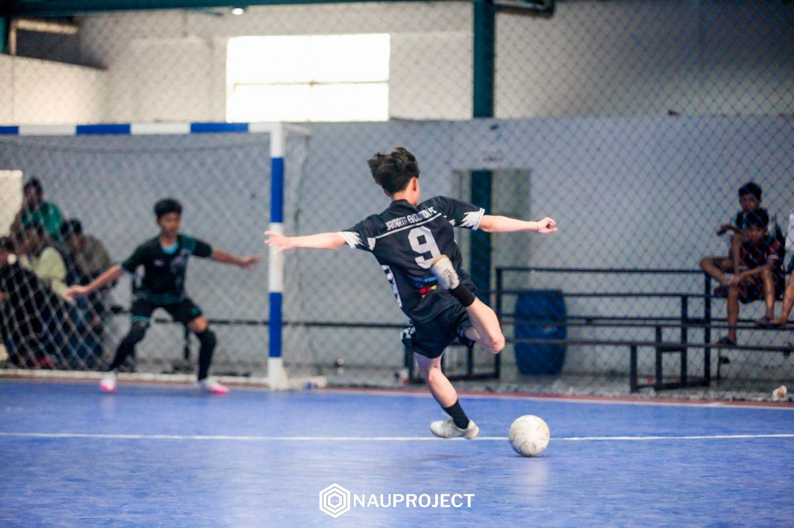
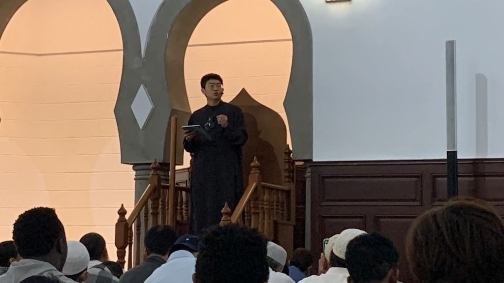
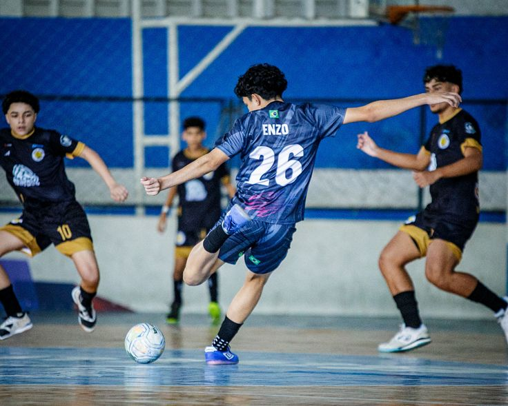

|
 |
|
 |
 |
|
SELAMAT DATANG DI WEBSITE YUSUF SALIM
Saya ucapkan terima kasih atas kunjungan anda ke website saya. Pada website ini anda dapat melihat profil data diri saya dan kegiatan-kegiatan yang saya lakukan.Perkenalkan, saya Yusuf Salim, siswa kelas 12 yang memiliki antusiasme tinggi dalam belajar dan berkembang. Selain fokus pada akademik di tahun kelulusan ini, saya aktif mengembangkan diri melalui olahraga sepak bola. Hobi ini telah membentuk saya menjadi pribadi yang kompetitif, disiplin, dan mampu bekerja sama dengan baik dalam sebuah tim. Saya percaya kombinasi antara fokus belajar dan sportivitas di lapangan adalah modal utama saya untuk menghadapi dunia perkuliahan maupun kerja ke depan.
ABOUT ME
Pendidikan Formal & Diniyah (Kelas 12) – Aktif menyelaraskan kurikulum nasional dengan pendalaman ilmu agama dan pembentukan akhlakul karimah.
Kepemimpinan Santri – Terbimbing untuk aktif dalam organisasi internal pondok, mengasah empati, komunikasi interpersonal, dan penyelesaian masalah berkelompok.
Karakter & Mental: Kepemimpinan Tim (Leadership), Kedisiplinan Tinggi, Mental Tangguh di Bawah Tekanan, & Adaptabilitas.
Olahraga & Strategi: Visi Bermain (Game Sense), Ketahanan Fisik & Stamina, Kerja Sama Tim Madani (Teamwork), & Pengambilan Keputusan Cepat.
Linguistik & Komunikasi: Basic Arabic (Percakapan Harian/Hiwar & Pemahaman Literatur), Basic English, Kemampuan Presentasi.
VISI MISI .
Menjadi pribadi unggul yang mengintegrasikan kecerdasan spiritual (SQ), kecerdasan linguistik, serta ketangkasan fisik. Saya siap melangkah ke jenjang pendidikan tinggi maupun profesional dengan membawa integritas santri, kemampuan komunikasi multi-bahasa, serta mentalitas pemenang yang sportif."
TERIMA KASIH ATAS KUNJUNGAN WEBSITE SALIM
THANGK YOUU
FOLLOW ME :@TAISIRUAARHAMAN 2
JUST KIDING
WASSALAMUAILAIKUM
KELAS:12
Teknologi Informasi dan KomunikasiTAISIRU ARRHAMAN
BY:YUSUF SALIM
|